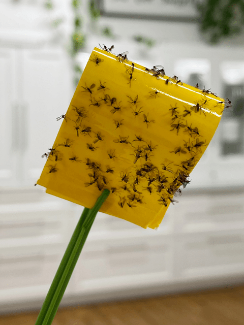

Fungas Gnats | Plant and Human Pests
The older kids are in school, the little one is down for a nap, and your spouse is off doing some errands. Ahhh, the house is finally quiet. What to do with yourself? You decide to make yourself an iced matcha latte, snuggle up on the couch, and read a book that has been begging for your attention over the past six months.
You wiggle your toes under the blanket, feeling the warmth radiate from your body. You sneak a smile as you take a sip of your matcha latte. Life is good. You feel relaxed, peaceful, and impressed at the fact that you finally took time out for yourself.
The book you are holding is a real page-turner. In your mind, you have been transported to another world, and you don’t want to come back. Enter the gnat grenade. It starts by making you unconsciously waving your hand in front of yourself (pesky little thing), as you refuse to let your eyes leave the page. The gnat repeats its flight path a few more times, just enough to let you know that it has no plans to leave you alone.
You keep turning the pages; you have long forgotten about the six-legged, four-winged creature. Then…just as you hit that jaw-clenching moment in the book, the gnat flies up your nose, slams it into reverse, and flies back out. You frantically rub your nose to alleviate the deep tickle, the book slips off your lap and hits the floor with a thud! “What the heck was that?!”
Picking up the book and composing yourself, you strive to revisit that place of la-la-land. But that darn gnat! It feels like an army of them attacking you, swarming you, but it’s just one! You wonder, How is it that this ONE gnat is ruining my me-time!
As you attempt to read, once again, the itty-bitty black-winged creature from the land of torture decides to test your wits. If an innocent bystander were peering in on you, they would find you “happily” clapping your hands together, making what appear to be ’80s dance moves. They would witness you waving your hands in the air as if you were putting together a choreography routine.
To the outsider, you look actively happy, but little do they know…ONE single gnat is about to take you down! Fifteen minutes later and only one page into the book, you take the life of the gnat! Regaining your composure, snuggling deeper into the couch, you clench the book, hoping to lose yourself in the story. Two minutes later, the gnat reappears! NOOOO! As you are flapping your hands in the air, screaming profanities at this nano-sized creature…you hear the school bus dropping the older kids off, the baby starts crying, and your spouse bursts through the doors, spilling groceries all over the floor.
As you stare off into the distance, your heart sinks a tiny bit. You look down at the book, close it, and mutter the words, “The end.” That’s “the end” of your quiet time. Just then, a little gnat flutters around your face. You darn near do the hokey-pokey and turn yourself around and stomp off! Go ahead and giggle, but you know there is truth in the story. If you are a plant lover, you have experienced something similar.
It’s time to uncover just where the heck these guys are coming from. Eventually, you will trace their origin to a houseplant, as they hover around the base of your houseplant(s). Fortunately, although very common, they tend not to harm indoor plants and are more of a nuisance than anything. Today, I will share a few different ways to eradicate them. It’s that, or you have to quarantine yourself in a plant-less room and hope that one didn’t hitch a ride in your tailwind.
What Are Fungus Gnats?
This insect is a common indoor pest that is typically found in or around overwatered potted plants. They are attracted to the moisture of potting soil. Adult gnats lay their eggs (up to about 200) on organic matter near the soil surface. After about three days, the eggs hatch into larvae, which burrow into the soil to feed on fungi and decaying plant material. Two weeks after that, adult gnats emerge from the soil to repeat the process. Adults live for about one week. Let the fun begin!
They are entirely harmless to humans (unless you want to keep your sanity intact) since they can’t bite and don’t spread diseases. They can be a problem for houseplants, however, when their population explodes, and their larvae start to feed on plants’ roots. Once you have a fungus gnat infestation, using consistent management and prevention techniques is key to ending it.
How to Identify Them
Well, to be frank, you know them when you see them. But, outside of invading your personal space, you can see telltale signs in your plants. If you have plants whose soil is infested with larvae, it will show symptoms of wilting, weak growth, and yellowing. The larvae can also cause severe damage to developing seedlings and young plants whose root systems haven’t fully developed.
Fun Fact
They’re attracted to CO2 (carbon dioxide), which is why they fly right up in your face. Sure, they want to annoy the heck out of you, but in reality, they just want your CO2.

How to Get Rid of Them
There are several initial steps that I consider mandatory. Outside of that, I will post a handful of possible remedies. You can try one or all and see what works best for you. Sometimes it will take several tactics, depending on the severity of the infestation.
Minimize Plant Debris
- Plant debris is an excellent source of the decaying organic matter in which fungus gnats prefer to lay their eggs.
- Remove any dead, discolored, damaged, or diseased leaves and stems as they occur with clean, sharp scissors.
- Some people choose to let a partially dying leaf on the plant, letting it fall off naturally. I like to remove any leaves that show signs of decay.
Monitor Your Watering
- Fungus gnats like moist areas, make sure your containers have good drainage, and water plants only when the top 1 to 2 inches of soil are dry. (This is especially important during the winter, when houseplant growth tends to slow down.)
- If the plant permits it, allow the soil to dry out between waterings, which will disrupt the availability of food for the fungus gnat and make your soil less attractive to them.
- If needed, add perlite to your potting mix to help improve drainage, especially if you tend to overwater.
- Plant your indoor plants in pots that have drainage holes.
- It’s essential to empty any excess standing water from the saucers under your container plants or the cover pots.
- I water my plants over the kitchen sink, saturating the soil until it drips from the drainage holes. I allow the plant to drain while I water other plants, to ensure that any excess water has diminished.
Home Remedies
Before trying any control measures, be sure that you have created a habit of keeping your plants free from debris, and you have the watering under control. Without those two steps in place, it won’t do any good to proceed with other measures. There are a lot of chemicals that you can purchase to help control a gnat infestation, but natural remedies are always my go-to. Remember, we need to treat the adult and larvae to get them under control.
Treating Fungus Gnat Larvae
Cinnamon – Controls larvae
- Cinnamon powder is a natural fungicide that is particularly effective against damping off. It helps control fungus gnats by destroying the fungus that the larvae feed on. True Ceylon cinnamon works the best.
- Sprinkle enough cinnamon to form a visible layer across the top of your potting media, and repeat every few weeks, if needed.
Sand – Controls larvae
- Adults lay their eggs in the top 1/4 inch of moist soil.
- Remove the top 2 inches of potting mix to dispose of the larvae already hatched. Discard the soil immediately.
- Dress the top of the soil with a 1/4–1/2 inch of sand. It will drain quickly and often confuse the adults into thinking the soil is dry.
Potato slices – Controls larvae
- Slice raw potatoes into 1-inch by 1-inch by 1/4-inch pieces.
- Place the slices next to each other on the surface of your potting soil to attract fungus gnat larvae.
- Leave the potato slices in place for at least 4 hours before looking under them.
- Once you have seen just how bad the problem is, replace the potato slices every day or two to catch and dispose of as many larvae as you can, and consider adding additional control measures.
Food Grade Diatomaceous Earth – Controls larvae & adults
- Food grade diatomaceous earth is an effective treatment to get rid of fungus gnats.
- Diatomaceous earth (DE) is mineralized fossil dust that is both natural and non-toxic to the environment.
- It’s crucial that if you use diatomaceous earth that you purchase the food-grade variety, which is safe and non-toxic to pets and for food-related products.
- Always wear a simple dust mask when working with DE, as contains microscopic shards of silica that physically shred any insect that walks through them. Mix some into the top layer of infested soil or into your potting mix before planting—it will kill any gnat larvae (and adults).
Hydrogen Peroxide – Controls larvae
- In a glass jar, mix one-part 3% hydrogen peroxide with four parts water.
- Allow the top layer of your soil to dry, and then water your plants with this solution as you normally would. Make sure you are using plant pots with drainage holes so any excess can drain away.
- The soil will fizz for a few minutes after application; this is normal.
- Hydrogen peroxide will kill fungus gnat larvae on contact.
- After a few minutes, the fizzing stops and the peroxide breaks down into harmless oxygen and water molecules, which are believed to help aerate the soil
Treating Fungus Gnat Adults
Vinegar Solution– Controls adults
- A good trap for both fungus gnats and fruit flies is to create a solution of 1-quart water, 2 Tbsp apple cider vinegar, 2 Tbsp dish soap, and 2 Tbsp sugar. Stir together and divide into smaller jars (if need be).
- Once you’ve filled the jars, cover the opening with plastic wrap, and poke several holes into them large enough for fungus gnats to enter.
- Place the jars near gnat infestations. Strain and reuse the vinegar until you have gained control of them.
Sticky Strip Traps
- These sticky traps work very well because they can kill off the adult gnats right as they are coming out of the soil, and the traps work for months at a time.
- The yellow coloring of the trap is what attracts the fungus gnats to it.
- You can replace the trap every three months or as soon as the sticky trap is full.
- The best part about such traps is that they are easy to use and effortless to replace.
- This is what I use.
Assess the Soil You Are Using
© AmieSue.com